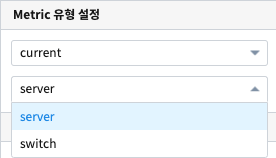
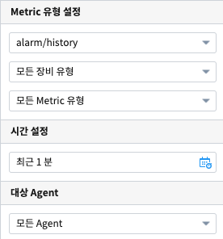

데이터 객체¶
데이터¶
데이터 유형 설정
데이터 유형 |
설명 |
|---|---|
데이터 모델 |
DB의 데이터를 추상화한 데이터 묶음으로서 별도의 테이블처럼 사용할 수 있습니다. |
DSMS |
Data Source Manager Service, 다양한 데이터에 대한 접근을 제공합니다. |
SMS |
System Monitoring Service, 시스템 자원 현황에 대한 정보를 제공합니다. |
REST API |
데이터를 REST 형식으로 사용할 수 있게 합니다. |
객체에 따라 특정 데이터 유형은 지원하지 않을 수도 있습니다.
데이터 유형별 선택옵션
데이터 유형 |
선택옵션 |
|---|---|
데이터 모델 |
데이터모델, 시간 설정, 검색어 |
DSMS |
연결정보, 검색어 |
SMS |
Metric 유형 설정 |
REST API |
Restful API 선택 |
데이터 모델¶
시간 설정¶
객체연결

검색어¶
검색어 입력

검색어 미리보기

전체 변수명 보기

캐시 설정¶
- 캐시 사용이 효과적인 경우
가져오는 데이터가 달라지지 않고, 해당 보고서에 여러 개의 시각화 객체와 데이터 개체가 있을 때
가져오는 데이터가 달라지지 않고, 1개의 데이터 객체를 여러 개의 시각화 객체에서 사용하는 경우
콤보박스, 체크박스 등 선택되는 변수로 인해서 검색어 조건이 달라지면 가져오는 데이터가 달라집니다. 이 경우에는 캐시를 미사용으로 설정합니다.
데이터 개수 제한(limit)¶


{kind=link}
{kind=link}
{kind=link}
{kind=link}
{kind=link}
{kind=link}
{kind=link}
{kind=link}
DSMS¶
연결 정보 선택¶
{kind=link}
검색어¶
SMS¶
Metric 유형 설정¶
API Type |
선택사항 |
추가 선택사항 |
|---|---|---|
current |
server, switch |
|
resource |
resource |
시간 설정, 대상 Agent |
alarm/history |
Equipment, Metric |
시간 설정, 대상 Agent |
current 를 선택한 경우
{kind=link}
resource 를 선택한 경우

alarm/history 를 선택한 경우
{kind=link}
{kind=link}
{kind=link}
REST API¶
{kind=link}
속성¶
{kind=link}
이벤트 값 전달 설정¶
옵션 명 |
설명 |
|---|---|
오브젝트 ID |
해당 객체의 고유 아이디로 자동으로 할당됩니다. |
변수 명 |
해당 객체를 사용하기 위한 변수명으로 사용자가 지정할 수 있습니다. |
트리거 설정 확인¶
객체¶

옵션 명 |
설명 |
|---|---|
가로 |
객체의 가로 크기를 설정합니다. |
세로 |
객체의 세로 크기를 설정합니다. |
옵션 명 |
설명 |
|---|---|
X |
좌표상의 X 위치를 설정합니다. |
Y |
좌표상의 Y 위치를 설정합니다. |